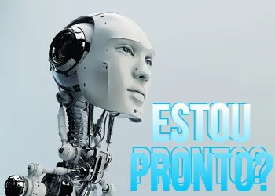
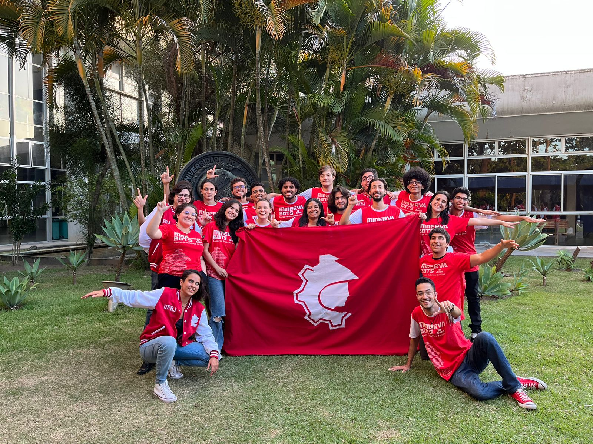
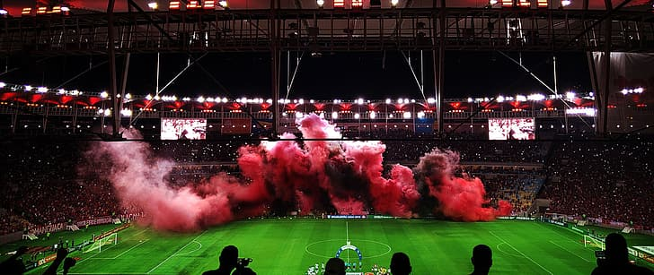

Sobre mim
Aspirante a desenvolvedor, sofrendo com o curso de engenharia de controle e automação,
entusiasta de robozinhos (principalmente o sumô Lego) entre outras coisas. Desde o ensino médio, tenho tido contato com tecnologia, robótica, programação etc. Logo, não deu outra, entrei na UFRJ no curso que pudesse me aproximar de tudo isso e ainda entrei numa equipe de competição de robôs que colocou em prática tudo que eu sabia ou deveria saber, além disso buscando o desenvolvimento encontrei o curso de programação do programadores carioca e aqui estou neste exato momento.
-

- 
- 
- 